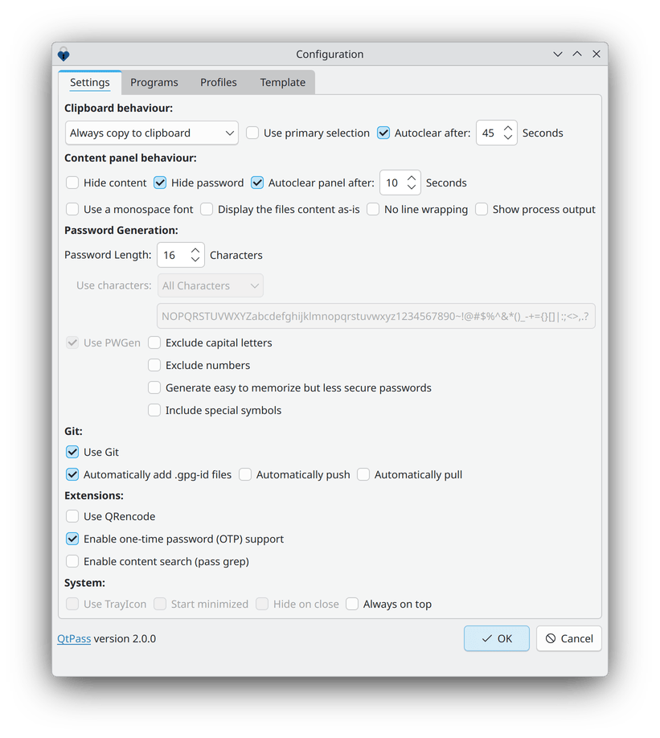

QtPass 1.7.0
QtPass is a multi-platform GUI for pass, the standard unix password manager.
View the Project on GitHub IJHack/QtPass


QtPass on macOS: Homebrew, Gatekeeper and how you can help
12 September 2026
What happened
Since 1 September 2026 brew install --cask qtpass no
longer works. Homebrew now disables every cask whose app does not pass
the macOS Gatekeeper check, and the QtPass .dmg is
neither code-signed nor notarized by Apple. The cask is marked
disable! date: "2026-09-01", because: :fails_gatekeeper_check.
Homebrew took that decision in August 2025. We found out in June 2026, when a user reported it in #1542. Nothing is wrong with Homebrew, and nothing is wrong with QtPass itself; the app simply is not signed.
Why QtPass is not signed
Signing and notarizing a macOS app needs a paid Apple Developer Program membership, about 99 euro per year. QtPass is maintained by volunteers in their spare time. None of us use macOS any more (I have not touched a MacBook in five years) and none of us have that membership. QtPass actually started life as a macOS-only app, so there is some irony here.
The build side is not the problem: our GitHub Actions already produce
the .dmg on a macOS runner. What is missing is a
Developer ID certificate to sign it with and an account to notarize it
against.
How to install QtPass on macOS today
Download the .dmg from the
releases page
and drag QtPass to your Applications folder. On first launch macOS
will refuse to open it, because the download carries the quarantine
flag and the app is unsigned. Remove the flag:
xattr -d com.apple.quarantine /Applications/QtPass.appOr open System Settings → Privacy & Security after the first refused launch and click Open Anyway. On macOS 15 and later right-click → Open no longer bypasses Gatekeeper for unsigned apps.
The other platforms are unaffected; see downloads. You can also build from source:
brew install qt pass pinentry-mac
git clone https://github.com/IJHack/QtPass.git
cd QtPass
qmake6 && make && macdeployqt QtPass.appHow you can help
Best option: you or your company already have an Apple Developer ID. Then you can sign and notarize our releases. It is a one-time setup: a Developer ID Application certificate and an app-specific password go into the GitHub Actions secrets, and from then on every release is signed and notarized automatically. Say hello in #1542.
Otherwise: fund the account. 100 euro covers one year of the Apple Developer Program. Two ways to do that:
- Sponsor the maintainer on GitHub Sponsors.
- Donate a minimum of 100 euro to Stichting Aid to Ukraine, a Dutch ANBI charity (tax-deductible in the Netherlands, RSIN 866916556) that brings vehicles, medical supplies and IT equipment to Kharkiv. Send proof of the donation to help@qtpass.org and I will pay Apple out of my own pocket. Honestly, this is the option I prefer.
As soon as the year is covered I will enrol, put signing and
notarization into the release pipeline, and ship the QtPass 1.8.0
.dmg notarized. After that the Homebrew cask can be
re-enabled.
Thanks to Stefan for the report, and to everyone who keeps QtPass running on a platform its maintainers no longer use.